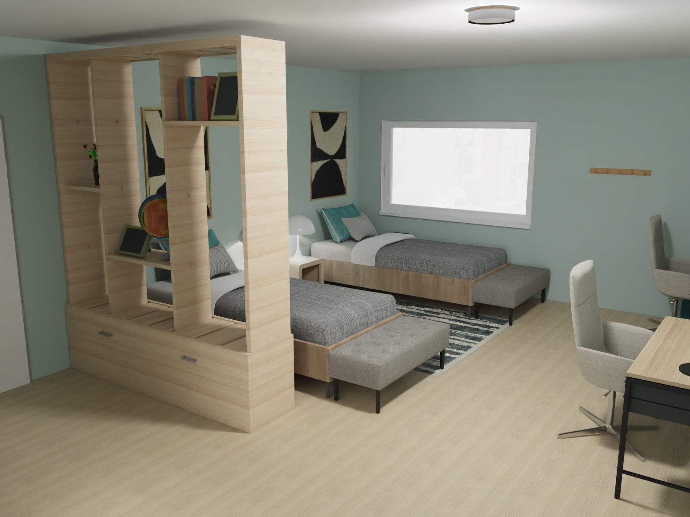
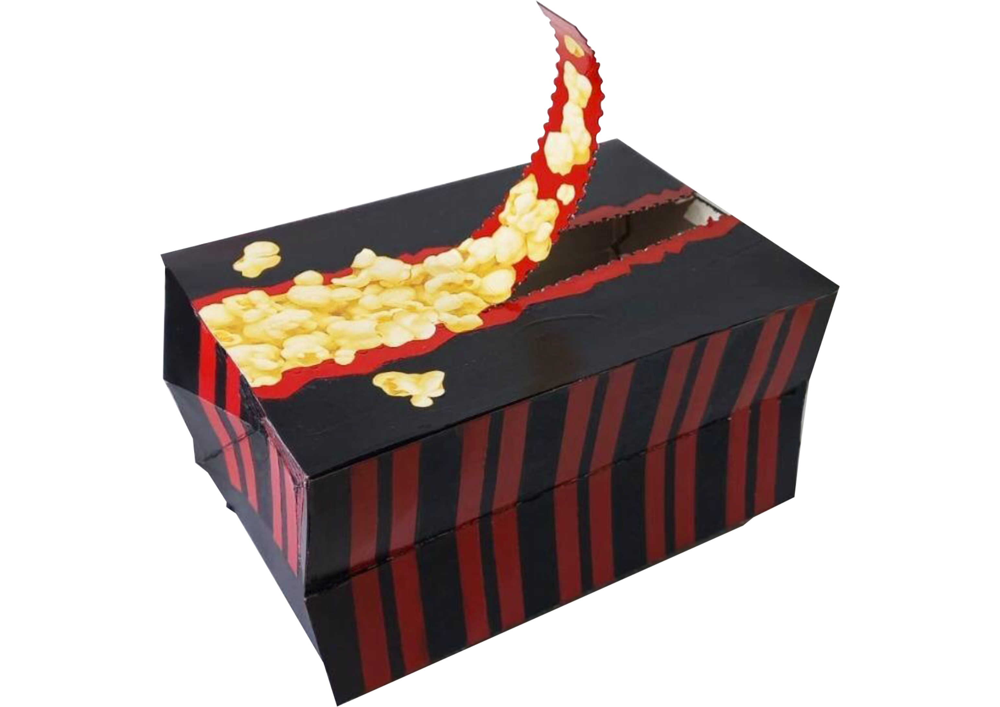
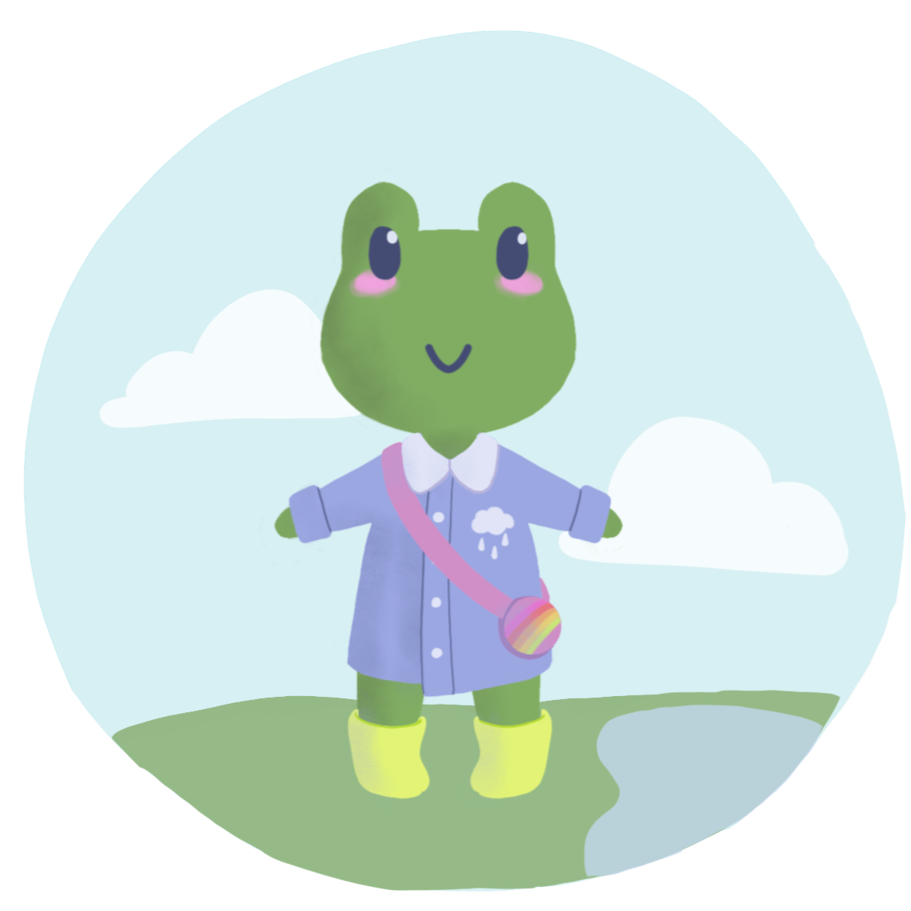
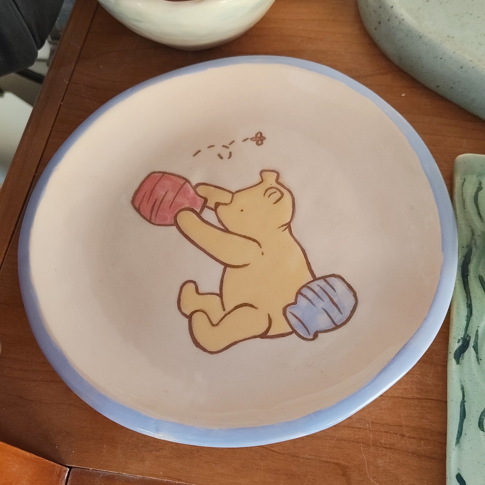
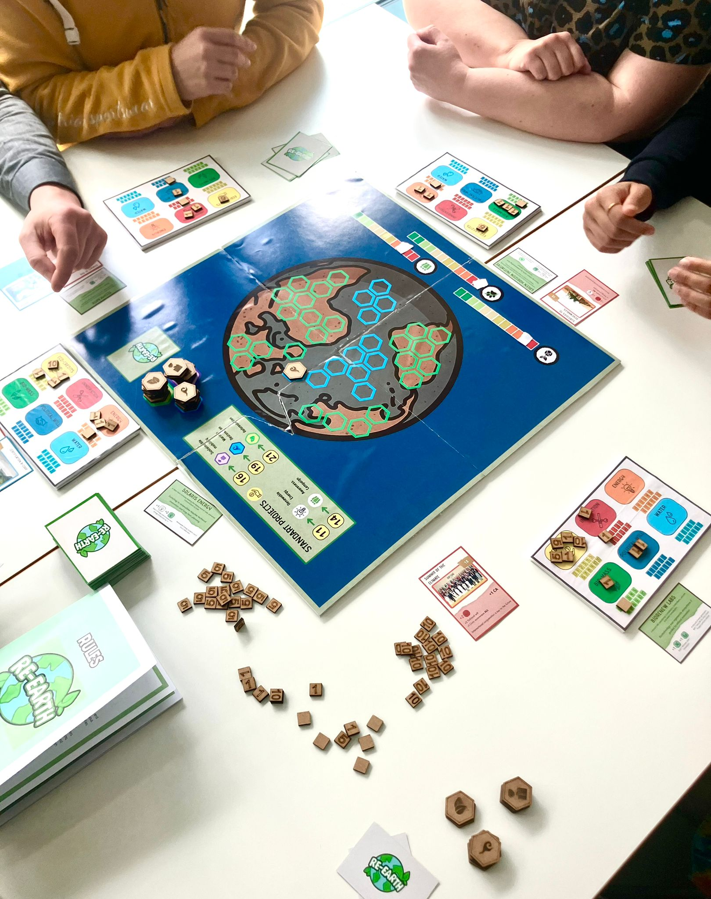

Mis Proyectos y Carpetas
Mi Portafolio
Pasa el cursor por encima de cualquier carpeta para previsualizar sus imágenes. Haz clic para abrirlas.
Diseño Industrial
14

TFG CON MATRÍCULA DE HONOR
Trabajo Fin de Grado
12

TRABAJOS GRUPALES
Proyectos del grado
7

2.º PREMIO EN CONCURSO NACIONAL
ProCarton
Otras producciones artísticas
13

Diseño Digital y Tradicional
Diseño de Personajes y Más
6

Modelado a Mano
Cerámica
7

LOGOS, CARTELES Y MÁS